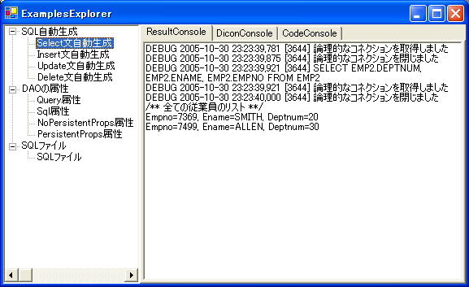

|
 |
|||||
S2Dao.NET TOPページへ
S2Dao.NET - Examples概要S2Dao.NETに付属するExamplesを実行し、S2Dao.NETを体験してみましょう。 データベースの準備ExamplesではデータベースサーバとしてSQL Server 2000もしくはMSDE 2000を使用します。 (以下SQL Server) まずSQL ServerにExamplesで使用するデータベース[s2dotnetdemo]をインストールします。 source/S2Dao.NET.Examples/data/setUpDemo.batを実行すると、 同じフォルダにあるDemo.sqlが読み込まれ、データベース[s2dotnetdemo]がインストールされます。 ExamplesはWindows認証を使用してSQL Serverにログインします。 Examplesを実行するWindowsユーザに、データベース[s2dotnetdemo]の読み込み(db_datareaderロール)、 書き込み(db_datawriterロール)権限を与えて下さい。 Examplesの設定Examplesの設定は、Microsoft Visual Studio .NET 2003(以下 Visual Studio)環境を前提に説明します。 Visual Studio 2005の場合は、プロジェクトの変換が必要です。 Visual Studioを起動し、source/S2Dao.NET.slnを開いて下さい。 スタートアッププロジェクトの設定Examplesをスタートアッププロジェクトに設定します。 S2Dao.NET.Examplesプロジェクトをスタートアッププロジェクトに設定して下さい。 (ソリューションエクスプローラでS2Dao.NET.Examplesプロジェクトを右クリックし、 「スタートアッププロジェクトに設定」を選択することで、設定することができます) SQL Serverの指定S2Dao.NET.Examplesプロジェクト中のSeasar.Dao.Examples/Ex.diconを編集します。 コンポーネント名[SqlDataSource]のプロパティ[ConnectionString]に、 SQL Serverに接続するための、接続文字列を設定しています。 接続文字列中の"Server"の部分を、Examples用のデータベースをインストールしたSQL Serverのインスタンス名 またはネットワークアドレスに変更します。
<component name="SqlDataSource" class="Seasar.Extension.Tx.Impl.TxDataSource">
<property name="DataProvider">Ex.SqlClient</property>
<property name="ConnectionString">
"Server=SQLServerのインスタンス名;database=s2dotnetdemo;Integrated Security=SSPI"
</property>
</component>
Examplesを実行する以上でExamplesを実行するための準備が整いました。 ビルドしてS2Dao.NET.Examples.exeを実行するか、Visual Stdioからデバッグを開始して実行して下さい。 実行するとExamplesExplorerが起動し、S2Dao.NETを体験することができます。 左側には現在のバージョンで動作するS2Dao.NETの機能が表示されます。 左側の一覧から実行する機能を選択すると、右側に実行結果が表示されます。 右側には実行結果のログ(ResultConsole)、実行に使用したDiconファイル(DiconConsole)、 実行したソースコード(CodeConsole)が表示され、それぞれのタブを選択することで確認することができます。  |
||
| © Copyright The Seasar Project and the others 2004-2012, all rights reserved. |